Chemistry
Chapter 20: Rate of chemical reactions
Chemical reaction not only forms new substances, but it also involves energy changes.
Different chemical reactions have different rates, and the degree of reaction (how much the reactants is actually used) is also different.
This chapter focuses on two main aspects: reaction rate and reaction extent (basically means how much a chemical reaction has progressed).
20.1 Significance of chemical reaction rate and its expression
There are many chemical changes in nature, production and life, and their speed is different.
For example: the explosion of fireworks is completed almost instantly, but rust of steel may take a week to see, some reactions even take years or longer to form.
The study of the rate of chemical reactions can help slow down unfavorable reactions and speed up favorable reactions. For example, iron rusting can be slowed down by painting it.
The 'speed' of a chemical reaction is called the rate of reaction.
The rate of reaction is defined as: \(\frac{\Delta concentration}{\Delta time}\). In here, \(\Delta concentration= final\ concentration-\ initial\ concentration\).
(!) Recall that the formula for concentration is \(\frac{moles\ of\ substance}{volume}\).
You can determine the rate of reaction by either the decrease in concentration of reactants or the increase in concentration of products per unit time.
The unit time can be \(s\), \(min\) or \(h\), and the unit for concentration is \(mol L^{-1}\). So, the unit for rate of reaction can be this for example: \(mol L^{-1} s^{-1}\).
(!) We use the symbol \(R\) to represent the average reaction rate from \(t_1\) to \(t_2\), or any given period of time.
(!) The notation \([A]_i\) will represent the concentration of \(A\) in \(t_i\).
For example, for the reaction \(aA + bB \rightarrow cC\), the average reaction rate for reactant A can be expressed as:
\[R_A = -\frac{\Delta [A]}{\Delta t} = -\frac{[A]_2 - [A]_1}{t_2 - t_1}\]
(!) Please note that for reactants, the reaction rate will be negative, since it's decreasing over time.
Likewise, the average reaction rate for product C can be expressed as:
\[R_C = \frac{\Delta [C]}{\Delta t} = \frac{[C]_2 - [C]_1}{t_2 - t_1}\]
After some experiments, you will find that the average reaction rate for reactants A, B and product C are actually related to each other:
\[-\frac{R_A}{a} = -\frac{R_B}{b} = \frac{R_C}{c}\]
This means that, the average reaction rate for reactants and products are proportional to their coefficients in the balanced chemical equation.
When you have the average reaction rate for one of the substances, you can calculate the average reaction rate for the others using this relationship.
This is very useful for exam questions.
20.2 Factors affecting the rate of chemical reaction
Many phenomena in production and life contain certain chemical principles. Why do you keep food in the refrigerator? Why can blowing air
into the stove make the fire more vigorous? Why do flour mills prohibit fireworks and smoking?
The rate of chemical reaction is affected by many factors, such as temperature, concentration, pressure, surface area and catalyst.
But, the main factor affecting the rate is still the nature (properties) of the reactants. For example, the rate of reaction involving covalent compounds
are much slower than the rate of reaction involving ionic compounds.
And also the rate of reaction among inorganic compounds are much faster than organic compounds,
because inorganic compounds' bonds usually have simpler structures than organic compounds.
20.2.1 Nature of reactants and surface area of reactants
Put a sugar cube and powdered sugar in two different glasses of water. From your experience, which one dissolves faster?
If the reactants is solid, then the reacting particles can only meet at the surface of the solid.
This is why the greater the surface area of the solid, the faster the reaction rate.
Smaller particles like powders have a much greater surface area than large lumps. So powders will react much faster than lumps.
20.2.2 Concentration of reactants and reaction rate
For many reactions, increasing the concentration of reactants will increase the reaction rate.
For example, if the iron wire is heated in the air, the iron wire can only become red hot,
while the iron wire is ignited in a gas cylinder filled with oxygen, it will burn vigorously.
This shows that the reaction rate is related to the concentration of reactants.
- Collision theory
According to collision theory, molecules must collide with each other to react (not all collision lead to a reaction though).
A collision that creates a reaction is called an effective collision.
The greater the number of effective collisions, the greater the rate of reaction.
When concentration of reactants increase, the frequency of collisions also increase, leading to an increase in the rate of reaction.
Hence, increasing the concentration of reactants will increase the rate of reaction.
To achieve effective collision, there are two conditions:
(1) The colliding particles must have sufficient energy to overcome the activation energy barrier.
(2) The colliding particles must be in the correct orientation.
You can look at the diagram below to understand it better:

I will add more tomorrow 🔥